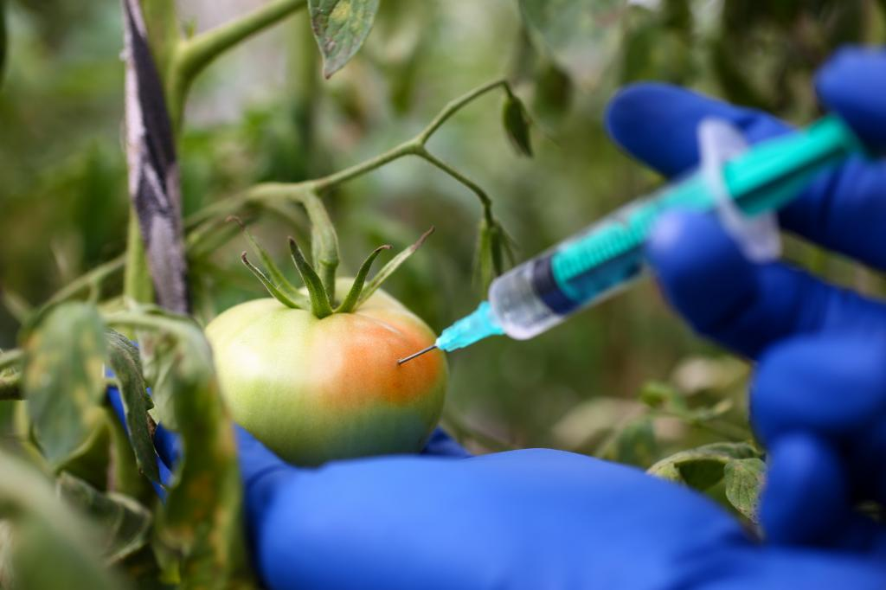

To increase the production of fruits and vegetables, many chemicals,
pesticides and insecticides are used. The use of pesticides can
dramatically increase crop production and ensure a higher quality of
produce. However, pesticides are also toxic chemicals designed to kill
agricultural pests, and some can cause problems if they are consumed by
humans in large amounts. Some of the fruits and vegetables have higher
concentrations of pesticides and some of the vegetables contain
pesticide residue.

Chemicals Used in Fruits and vegetables
Chemicals such as copper sulfate, rhodamine oxide, malachite green and the deadly carbide are the ones most commonly used to accentuate coloration and freshness in fruits and vegetables.
Green vegetables are often treated with 'neel' (copper sulfate) which is a major constituent of fungicides in agriculture and its ingestion affects the liver and kidneys and causes the formation of free radicals in the body which augment the ageing process.
Rhodamine B, which is a carcinogen, imparts the bright red hue to cherries. This dye is used in markers and also as an agricultural pesticide. It is a skin irritant.
Vendors also frequently use calcium carbide, commonly known as carbide, to artificially ripen fruits like bananas and mangoes.
Pesticides, including insecticides, rodenticides, herbicides, fungicides and antimicrobials are all used to grow today’s non-organic fruits and vegetables. While these chemicals help to protect farmer’s yields, they can be incredibly harmful to people and the environment.
Organophosphates are the most widely used group of insecticides. These insecticides are commonly used on produce such as apples, peaches, nectarines and many others.“All organophosphates have a common mechanism of toxicity and can cause similar symptoms in humans who have too much exposure,” states the CDC.
Effects
Chemicals such as copper sulfate, rhodamine oxide, malachite green are neurotoxic (affecting the brain) causing Alzheimer's and dementia and are also carcinogenic.
There are pesticides for weeds, fungus, bacteria, microbes, algae, insects etc meaning that a single crop can contain over seven different pesticides on it.
The average person can be exposed to a small amount of these pesticides by way of the produce that they buy (if not organic), but workers and people who live near farms are at much higher risk of experiencing dizziness, nausea and vomiting, seizures, difficulty breathing, coma and in severe cases, neuropathy.One of the most troubling details about human pesticide exposure is the fact that they can accumulate over time in body tissues.
As similar as the health concerns ,the environmental impact is sadly not much better.
Pesticides are typically sprayed which makes it easy for airborne chemicals to travel or drift from their target area.
Afte they are applied ,they may be present in the soil, surface waters, and on the surface of the plants. They can move through the soil and contaminate ground water.
Like in humans, pesticides bioaccumulate in animals and can damage their nervous systems and lead to higher instances of cancer.
Atrazine, a widely-used herbicide has been known to cause male frogs to turn into females.They also play role in the decline of the bees

Precautions
The challenge is to balance a reliable, high-quality food supply with the need to protect the consumer from unnecessary exposure to chemicals.
All the consumers should be aware of these effects and should take some measures like selecting fruits and vegetables without spots or any abnormality, washing thoroughly.
We like to eat fruits and vegetables to keep ourselves healthy, and ingesting harmful chemicals is not supposed to be part of the deal! Luckily, there is also a lot that we can do as consumers to protect ourselves and the environment from these toxic chemicals.
To reduce your exposure to pesticides and other chemicals:
- Buy organic produce.
- Thoroughly wash all fruit and vegetables (even organic).
- Grow your own vegetables.
- Peel vegetables or remove the outer layer of leaves.
- Trim visible fat from meats – as many residues are fat soluble.
- Cook meat and chicken thoroughly.
- Consume a variety of foods (including meat alternatives like legumes, tofu, nuts and eggs) to reduce your intake of antibiotic-resistant bacteria, hormones and pesticides.
Many people choose to buy organic produce to avoid pesticide residues. Organic farming grows produce without the use of synthetic chemicals or pesticides.Organic pesticide residues are also regulated by FSANZ to ensure they can be consumed safely.Purchasing organic fruits and vegetables is a great way to vote against pesticides. As the demand for pesticide-free produce increases, farms and food producers will be more willing to make the switch to natural modes of pest control.
In fact, according to Food Safety News, in the past three decades, the organic product industry has grown by 3,4oo percent, largely fueled by consumer demands. Even huge corporations like Walmart and Target are starting to increase their organic offerings, making this produce readily available to the general public.
Many people tend to avoid organics because of high price, so if you cannot afford to buy organic produce 100 percent of the time, there is an easy guide to help you navigate which fruits and vegetables you should always buy organic due to high pesticide use. Every year the Environmental Working Group comes out with their “Dirty Dozen” list of produce that you should avoid unless it is organic (or home-grown!). They also put out a “Clean Fifteen” list of items that you can buy non-organic and not have to worry about high levels of pesticide exposure.
Being a conscious consumer and voting for the health of others and the environment by choosing organic is a great way to bring about permanent change in the food world.
So let’s get eating (organic)!